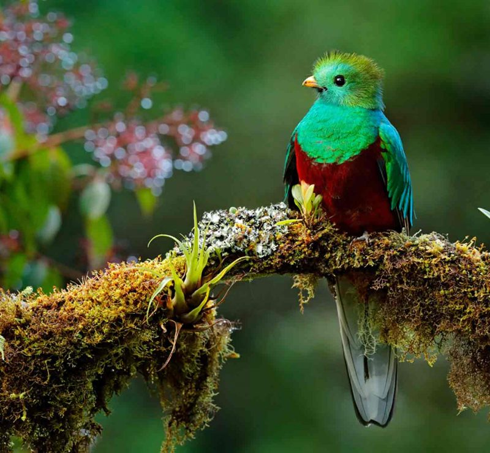

| Imagen | Informacion |  |
Parque Nacional Guayabo¡Arqueología y naturaleza en armonía! Aproximadamente 20 hectáreas del área protegida comprenden el sitio arqueológico, que consiste en un conjunto de estructuras arquitectónicas prehispánicas elaboradas en piedra –cantos rodados de río-"Documentación" |
|---|---|
 |
Parque Nacional Braulio Carillo¡Protegiendo y conservando para el disfrute de las generaciones! El paisaje está constituido por montañas altas densamente cubiertas de bosques y gran cantidad de cañones por los que discurren ríos y quebradas"Abrir Tourist Service Department" |
 |
Parque Nacional Corcovado¡Naturaleza cargada de aventura! Si está dispuesto a vivir una experiencia salvaje y a sentir la naturaleza en todo su esplendor, la zona de Osa espera por usted."Abrir Tourist Service Department" |
|  | Parque Nacional los Quetzales¡Protegiendo el hábitat del quetzal! Es un área especial para el avistamiento de aves, como el Quetzal (Pharomachrus mocinno)"Abrir Diagnostico sobre el manejo del Parque Nacional" |
Parque Nacional Marino Ballena¡Un oasis de especies del mar! Ballenas y delfines emergen del agua y ofrecen un espectáculo."Sedimentación y nutrientes contra corales en Parque Nacional Marino Ballena" |